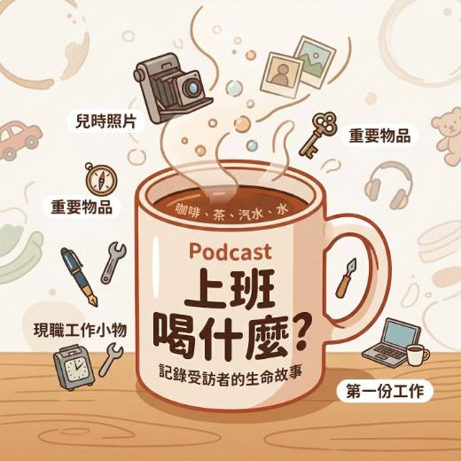
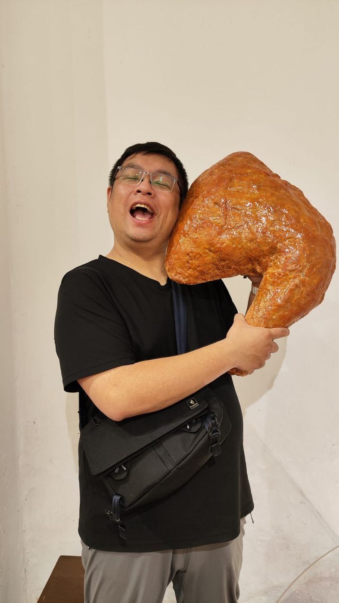
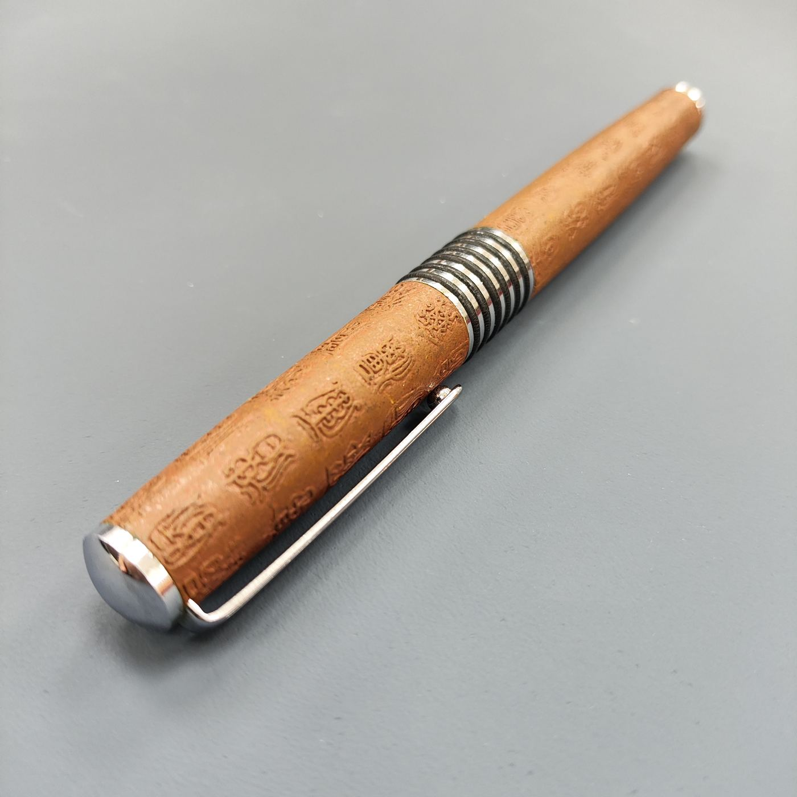

人物專訪與 Podcast 製作
依篇數報價新聞編輯台出身，擅長把一個人的經歷整理成有起伏、讀得下去的故事。
- 品牌創辦人、員工、客戶的人物專訪撰稿
- Podcast 企劃、訪綱設計與主持
- 專訪攝影與社群短文改寫
作品：《上班喝什麼？》已播出 27 集，訪問 26 種職業；曾任央廣新聞編輯、公視影像編輯、鏡週刊廣編寫手。
洽談這項服務 →黑熊（吳思彥，Obear）是台北的 Podcast《上班喝什麼？》主持人與人物專訪作者，也是凱基人壽承暘通訊處業務主任。新聞編輯出身，做過劇本殺設計與社福站長。
十多年來在廣播、電視、雜誌與社福第一線之間移動，本質上是一場關於「人與困境」的田野調查。現在，他把採訪的耐心帶進保險規劃，也把說故事的能力借給需要被看見的品牌與團隊。
告別式後的一趟車程，讓他決定建起預防工事
黑熊的母語是台語。父親要求「回家必須講台語」，國小音樂課他上台唱《雪中紅》，換來全班錯愕的眼光，從此好幾年刻意避開麥克風。長大後，這份語言底子反而成了他在老人社福第一線與長輩無礙溝通、在劇本殺主持中拉近距離的本事。
他先後在中央廣播電臺、公共電視追蹤無家者與黑戶寶寶等邊緣議題，再轉到鏡週刊寫廣編與行銷企劃。後來接下華山基金會萬華愛心天使站站長，把站所倉庫打造成物資補給站，也堅持在獨居長輩家裡多待兩三個小時，而不是量完體溫就走。
如果下游的救助無法逆轉經濟的崩塌，能不能走到生命的上游，提前替人排除風險？
一場破百歲老榮民的告別式，靈堂裡只有他、一位義工、葬儀社人員和那位無助的老婦人。看過太多家庭因一場重病、一次詐騙跌落貧窮線，三十歲的他轉身進入保險業。他不喜歡演來演去的推銷話術，而是把保險當成替家庭架設的護欄。
工作之外，他主持 Podcast《上班喝什麼？》，每集從受訪者上班喝的那杯飲料聊起；平常健身、攝影、辦各種大小活動，正在學更多理財知識與即興劇。
PODCAST · 2026 年 5 月開播
每天上班，你都靠什麼續命？黑熊用五個線索認識每位來賓：一張兒時照片、一件重要物品、幾樣工作小物、一杯專屬飲品，以及第一份工作。

點選任一集會開啟該集介紹頁，頁面上有 SoundOn、Apple Podcasts 與 Spotify 的收聽連結。
可以找黑熊做的事
新聞編輯台出身，擅長把一個人的經歷整理成有起伏、讀得下去的故事。
作品：《上班喝什麼？》已播出 27 集，訪問 26 種職業；曾任央廣新聞編輯、公視影像編輯、鏡週刊廣編寫手。
洽談這項服務 →
把團隊的溝通問題寫進劇情裡，讓同事在推理和角色扮演中自己發現。
經歷：劇本殺工作室遊戲設計（每月開發兩本）、密室帶場主持、劇本殺門市店長。
洽談這項服務 →用手機或相機帶孩子練習觀察：光從哪裡來、要把誰放在畫面中間、為什麼這一張比較好看。適合親子共學、安親班與社區課程。曾任公共電視影像編輯，熟悉攝影機操作與影像後製。
洽談這項服務 →適合剛出社會的小資族、準備成家的伴侶、想替爸媽補保障的子女。不急著賣你東西，先把你現在的保單和開銷攤開來看。
凱基人壽 承暘通訊處 業務主任 吳思彥
登錄字號：0113202871 ｜ 保險商品內容以要保書及保單條款為準。

黑熊本名吳思彥，英文名 Obear，住在台北。他是 Podcast《上班喝什麼？》主持人與人物專訪作者，也是凱基人壽承暘通訊處業務主任。過去待過中央廣播電臺、公共電視、鏡週刊與華山基金會。
一個職場人物訪談 Podcast。黑熊用五個線索認識每位來賓：兒時照片、重要物品、工作小物、上班喝的飲品和第一份工作。2026 年 5 月開播，已播出 27 集，可在 SoundOn 與 Apple Podcasts 收聽。
首次諮詢不收費。黑熊會先看你現有的保單與家庭狀況，說明保障缺口在哪裡，再由你決定要不要調整。
可以委託員工或品牌人物專訪、Podcast 企劃與主持，也可以請他設計團隊培訓用的劇本殺與尾牙春酒活動，並擔任活動主持。
可以。只要你有一份正在做、或曾經認真做過的工作，都歡迎私訊 IG 聊聊你的職場故事。
最快的方式是 Instagram 私訊 @obear.tw，說明你想洽談的服務與大致時間，黑熊會在兩個工作天內回覆。
Instagram 私訊是最快找到我的方式，兩個工作天內回覆。
私訊時附上這三件事，可以更快排時間
送出後會寄到黑熊的信箱，一樣在兩個工作天內回覆。